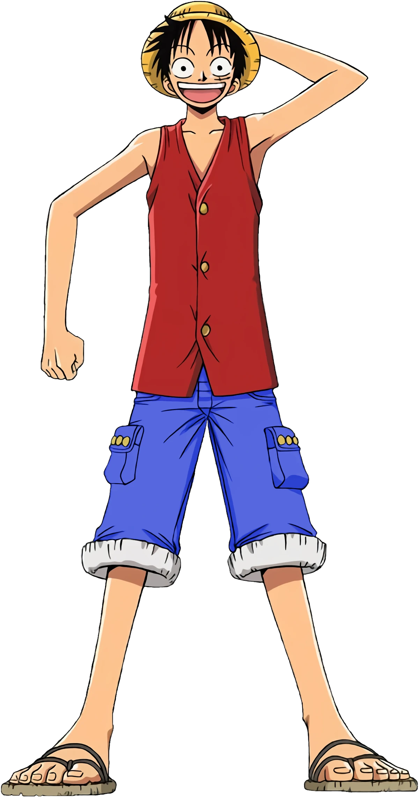

Software Engineer

Makima is a character from the manga and anime series "Chainsaw Man" created by Tatsuki Fujimoto. She is a high-ranking Public Safety Devil Hunter and serves as one of the main antagonists in the series. Makima is known for her calm and composed demeanor, as well as her manipulative and cunning nature. She has a mysterious aura and possesses powerful abilities that make her a formidable character in the story.